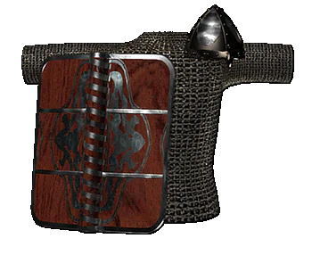

|
Защитное вооружение |
|
| Доспехи -- шлемы,
кольчуги и щиты -- появились на Руси во времена,
когда происходило становление феодальной власти
и строились ее города и замки. Сверкающие
доспехи, которые демонстрировали в бою ратники,
оказывали большое психологическое воздействие
на врага. Шлемы чаще всего имели сфероконическую форму. Даже прямой сабельный удар мог безвредно соскользнуть с обтекаемой формы плоскости такого покрытия. Ближе ко второй половине XII века появились и куполовидные шлемы с округлым выступом на макушке. Шлемы были не только у командиров, но и у многих рядовых воинов Древней Руси. Кольчуга служила основной защитной одеждой тяжеловооруженных воинов. В XII веке вся старшая русская дружина была оснащена кольчугами. На изготовление одной кольчуги шло около 600 (!) метров железной проволоки и не менее 20 тысяч (!!) попеременно сваренных и склепанных колец. Сами кольца достигали в поперечнике от 7-9 до 10-14 мм, а по толщине не превышали и 0,8-2 мм. Средний вес кольчужной рубашки составлял 7 кг. В это же время на Руси появляется наборная пластиночная броня. Пластины при монтировке значительно заходили друг за друга и тем самым удваивали толщину брони, которая помогала отражать или смягчать удары противника. Друг с другом пластины соединялись с помощью ремешков и подкладочной основы не требовали. Щиты на Руси появились с выдвижением конного войска, а к концу XII века стали служить и геральдическим целям. Щит, наряду с такими предметами, как шлем, меч и копье, служил не только в бою, но был также государственным и военным символом, отличительным знаком ранга. Щиты обычно были круглыми, с полушаровидным или сфероконическим умбоном в центре, однако чаще всего использовались щиты миндалевидной формы, которые защищали всадника от подбородка до колена. В XII веке на русском щите появился специальный желоб, деливший его поле надвое и облегчавщий манипуляции в бою. |
|
Текст и
иллюстрации (c) 1997 Snowball Interactive Entertainment, Inc. |